Git 使用熟练吗？
熟悉，项目的代码是用 git 工具来管理的/
git 的工作原理如下图：
几个专用名词的译名如下：
- Workspace：工作区
- Index / Stage：暂存区
- Repository：仓库区（或本地仓库）
- Remote：远程仓库
工作流程
最基础的工作流程，首先执行 git pull 获取远程仓库的最新代码，进行代码的编写。
完成相应功能的开发后执行 git add . 将工作区代码的修改添加到暂存区，再执行 git commit -m 完成xx功能 将暂存区代码提交到本地仓库并添加相应的注释，最后执行 git push 命令推送到远程仓库。
撤回 git commit 操作
当执行了 git commit -m 注释内容 命令想要撤回，可以使用 git reset --soft HEAD^ 把本地仓库回退到当前版本的上一个版本，也就是刚刚还没提交的时候，代码的改动会保留在暂存区和工作区。
也可以使用 git reset --mixed HEAD^，这样不止回退了刚刚的 git commit 操作，还回退了 git add 操作，代码的改动只会保留在工作区。因为 --mixed 参数是 git reset 命令的默认选项，也就是可以写为 git reset HEAD^。
撤回 git push 操作
当执行了 git push 命令想要撤回，可以使用 git reset HEAD^ 将本地仓库回退到当前版本的上一个版本，代码的修改会保留在工作区，然后使用 git push origin xxx --force 将本地仓库当前版本的代码强制推送到远程仓库。
Docker 有了解吗？
了解过，大家一起开发一个软件时，每个人的电脑就像不同的房子，里面的家具（软件、工具等环境配置）都不太一样。用 Docker 就可以打造一个标准的 “样板房”，不管谁拿到这个 “样板房”（Docker 镜像），里面的东西都是一样的。这样开发时就不会因为环境不同，出现代码在这个人电脑上能跑，在另一个人电脑上就出错的情况。
docker 底层的隔离实现原理如下：
- 基于 Namespace 的视图隔离：Docker利用Linux命名空间（Namespace）来实现不同容器之间的隔离。每个容器都运行在自己的一组命名空间中，包括PID（进程）、网络、挂载点、IPC（进程间通信）等。这样，容器中的进程只能看到自己所在命名空间内的进程，而不会影响其他容器中的进程。
- 基于 cgroups 的资源隔离：cgroups 是Linux内核的一个功能，允许在进程组之间分配、限制和优先处理系统资源，如CPU、内存和磁盘I/O。它们提供了一种机制，用于管理和隔离进程集合的资源使用，有助于资源限制、工作负载隔离以及在不同进程组之间进行资源优先处理。
Jenkins 有了解吗？讲讲什么是持续集成和持续部署？
Jenkins 是开源的自动化服务器，核心功能是实现 CI/CD 流程的调度和管理。例子，一个软件开发团队使用 Jenkins 作为 CI/CD 工具，开发人员每天多次将代码提交到 Git 仓库，Jenkins 会自动触发构建和测试任务。如果代码通过了所有测试，Jenkins 会将代码自动部署到生产环境，让用户能够尽快使用到新的功能。
持续集成（Continuous Integration，CI）
持续集成是什么？开发人员频繁地将代码变更合并到主分支（如每天多次），每次合并后自动触发构建、测试和代码检查，确保新代码不会破坏已有功能。核心目标：快速发现并修复集成问题，避免“集成地狱”。
关键流程：
- 代码提交 → 触发自动化流程。
- 代码编译 → 检查语法错误。
- 运行单元测试 → 确保新代码不影响现有功能。
- 代码质量检查 → 如 SonarQube 分析代码规范。
- 生成报告 → 失败时通知团队，成功则生成可部署的产物（如 Jar 包）。
持续部署（Continuous Deployment，CD）
持续部署是什么？自动化将代码发布到生产环境，只要通过 CI 流程的代码变更，无需人工干预即可直接上线。核心目标：快速、安全地交付用户价值。
关键流程：
- 从 CI 产物出发 → 如通过测试的 Jar 包。
- 环境部署 → 自动部署到测试、预发布、生产环境。
- 自动化验收测试 → 验证功能是否符合需求。
- 监控与回滚 → 发现生产问题自动回退版本。
假设团队开发一个 Java Web 项目：
- 持续集成（CI）：开发者提交代码到 Git → Jenkins 自动拉取代码 → 运行 Maven 构建 → 执行单元测试 → 生成测试报告。如果测试失败，邮件通知负责人；成功则生成 War 包。
- 持续部署（CD）：先将 War 包自动部署到 Tomcat 服务器，然后使用 Docker 或 Kubernetes 实现滚动更新，零停机部署。
RabbitMQ的特性你知道哪些？
RabbitMQ 以 可靠性、灵活性 和 易扩展性 为核心优势，适合需要稳定消息传递的复杂系统。其丰富的插件和协议支持使其在微服务、IoT、金融等领域广泛应用，比较核心的特性有如下：
-
持久化机制：RabbitMQ 支持消息、队列和交换器的持久化。当启用持久化时，消息会被写入磁盘，即使 RabbitMQ 服务器重启，消息也不会丢失。例如，在声明队列时可以设置
durable参数为true来实现队列的持久化：
import pika
connection = pika.BlockingConnection(pika.ConnectionParameters('localhost'))
channel = connection.channel()
# 声明一个持久化队列
channel.queue_declare(queue='durable_queue', durable=True)
-
消息确认机制：提供了生产者确认和消费者确认机制。生产者可以设置
confirm模式，当消息成功到达 RabbitMQ 服务器时，会收到确认消息；消费者在处理完消息后，可以向 RabbitMQ 发送确认信号，告知服务器该消息已被成功处理，服务器才会将消息从队列中删除。 - 镜像队列：支持创建镜像队列，将队列的内容复制到多个节点上，提高消息的可用性和可靠性。当一个节点出现故障时，其他节点仍然可以提供服务，确保消息不会丢失。
- 多种交换器类型：RabbitMQ 提供了多种类型的交换器，如直连交换器（Direct Exchange）、扇形交换器（Fanout Exchange）、主题交换器（Topic Exchange）和头部交换器（Headers Exchange）。不同类型的交换器根据不同的规则将消息路由到队列中。例如，扇形交换器会将接收到的消息广播到所有绑定的队列中；主题交换器则根据消息的路由键和绑定键的匹配规则进行路由。
RPC的概念是什么？
RPC 即远程过程调用，允许程序调用运行在另一台计算机上的程序中的过程或函数，就像调用本地程序中的过程或函数一样，而无需了解底层网络细节。
一个典型的 RPC 调用过程通常包含以下几个步骤：
- 客户端调用：客户端程序调用本地的一个 “伪函数”（也称为存根，Stub），并传入所需的参数。这个 “伪函数” 看起来和普通的本地函数一样，但实际上它会负责处理远程调用的相关事宜。
- 请求发送：客户端存根将调用信息（包括函数名、参数等）进行序列化，然后通过网络将请求发送到服务器端。
- 服务器接收与处理：服务器端接收到请求后，将请求信息进行反序列化，然后找到对应的函数并执行。
- 结果返回：服务器端将函数的执行结果进行序列化，通过网络发送回客户端。
- 客户端接收结果：客户端接收到服务器返回的结果后，将其反序列化，并将结果返回给调用者。
常见的 RPC 框架：
- gRPC：由 Google 开发的高性能、开源的 RPC 框架，支持多种编程语言，使用 Protocol Buffers 作为序列化协议，具有高效、灵活等特点。
- Thrift：由 Facebook 开发的跨语言的 RPC 框架，支持多种数据传输协议和序列化格式，具有良好的可扩展性和性能。
- Dubbo：阿里巴巴开源的高性能 Java RPC 框架，提供了服务治理、集群容错、负载均衡等功能，广泛应用于国内的互联网企业。
zookeeper的ZAB和RAFT有什么区别
- Leader选举：Raft协议采用随机定时器选举Leader，而Zab协议采用广播选举Leader。在Raft协议中，节点通过定时器在一段时间内随机发起Leader选举，如果某个节点获得了大多数节点的支持，则成为Leader；而在Zab协议中，节点通过向所有节点发送消息来宣布自己的竞选，如果某个节点获得了大多数节点的支持，则成为Leader。
- 日志复制：Raft协议采用Leader作为日志复制的中心控制器，而Zab协议采用集合Leader作为日志复制的中心控制器。在Raft协议中，Leader节点负责接收客户端请求，并将这些请求复制到其他节点的日志中，从而实现数据一致性；而在Zab协议中，除了Leader节点，其他节点都有可能参与日志复制，从而实现数据一致性。
- 数据复制：Raft协议采用多数派决策，而Zab协议采用恢复模式。在Raft协议中，数据只有在大多数节点都写入成功之后，才认为提交成功，这种方法保证了数据的一致性；而在Zab协议中，如果出现了节点故障，集群需要进入恢复模式来保证数据一致性。
- 可扩展性：Raft协议相对于Zab协议来说更具有可扩展性。Raft协议中节点之间的通信方式更加灵活，可以采用TCP、UDP等多种协议，从而更适合大规模的分布式系统；而Zab协议则更适合规模较小的集群。
- 日志表示：ZAB使用epoch和count的组合来唯一标识一个日志条目。Raft使用term和index来唯一标识日志条目。
zookeeper实现了cap理论的哪一种
CAP理论告诉我们，一个分布式系统不可能同时满足以下三种
- 一致性（C:Consistency）
- 可用性（A:Available）
- 分区容错性（P:Partition Tolerance）
这三个基本需求，最多只能同时满足其中的两项，因为P是必须的,因此往往选择就在CP或者AP中。
在此ZooKeeper保证的是CP，原因：
- 不能保证每次服务请求的可用性。任何时刻对ZooKeeper的访问请求能得到一致的数据结果，同时系统对网络分割具备容错性；但是它不能保证每次服务请求的可用性（注：也就是在极端环境下，ZooKeeper可能会丢弃一些请求，消费者程序需要重新请求才能获得结果）。所以说，ZooKeeper不能保证服务可用性。
- 进行leader选举时集群都是不可用。在使用ZooKeeper获取服务列表时，当master节点因为网络故障与其他节点失去联系时，剩余节点会重新进行leader选举。问题在于，选举leader的时间太长，30 ~ 120s, 且选举期间整个zk集群都是不可用的，这就导致在选举期间注册服务瘫痪，虽然服务能够最终恢复，但是漫长的选举时间导致的注册长期不可用是不能容忍的。所以说，ZooKeeper不能保证服务可用性。
Kafka 如何保证顺序读取消息？
Kafka 可以保证在同一个分区内消息是有序的，生产者写入到同一分区的消息会按照写入顺序追加到分区日志文件中，消费者从分区中读取消息时也会按照这个顺序。这是 Kafka 天然具备的特性。
要在 Kafka 中保证顺序读取消息，需要结合生产者、消费者的配置以及合适的业务处理逻辑来实现。以下具体说明如何实现顺序读取消息：
- 生产者端确保消息顺序：为了保证消息写入同一分区从而确保顺序性，生产者需要将消息发送到指定分区。可以通过自定义分区器来实现，通过为消息指定相同的Key，保证相同Key的消息发送到同一分区。
- 消费者端保证顺序消费：消费者在消费消息时，需要单线程消费同一分区的消息，这样才能保证按顺序处理消息。如果使用多线程消费同一分区，就无法保证消息处理的顺序性。
Kafka 本身不能保证跨分区的消息顺序性，如果需要全局的消息顺序性，通常有以下两种方法：
- 只使用一个分区：将所有消息都写入到同一个分区，消费者也只从这个分区消费消息。但这种方式会导致 Kafka 的并行处理能力下降，因为 Kafka 的性能优势在于多分区并行处理。
- 业务层面保证：在业务代码中对消息进行编号或添加时间戳等标识，消费者在消费消息后，根据这些标识对消息进行排序处理。但这种方式会增加业务代码的复杂度。
如何保证幂等写？
幂等性是指 同一操作的多次执行对系统状态的影响与一次执行结果一致。例如，支付接口若因网络重试被多次调用，最终应确保仅扣款一次。实现幂等写的核心方案：
- 唯一标识（幂等键）：客户端为每个请求生成全局唯一ID（如 UUID、业务主键），服务端校验该ID是否已处理，适用场景接口调用、消息消费等。
- 数据库事务 + 乐观锁：通过版本号或状态字段控制并发更新，确保多次更新等同于单次操作，适用场景数据库记录更新（如余额扣减、订单状态变更）。
- 数据库唯一约束：利用数据库唯一索引防止重复数据写入，适用场景数据插入场景（如订单创建）。
- 分布式锁：通过锁机制保证同一时刻仅有一个请求执行关键操作，适用场景高并发下的资源抢夺（如秒杀）。
- 消息去重：消息队列生产者为每条消息生成唯一的消息 ID，消费者在处理消息前，先检查该消息 ID 是否已经处理过，如果已经处理过则丢弃该消息。
Kafka 为什么这么快？
- 顺序写入优化：Kafka将消息顺序写入磁盘，减少了磁盘的寻道时间。这种方式比随机写入更高效，因为磁盘读写头在顺序写入时只需移动一次。
- 批量处理技术：Kafka支持批量发送消息，这意味着生产者在发送消息时可以等待直到有足够的数据积累到一定量，然后再发送。这种方法减少了网络开销和磁盘I/O操作的次数，从而提高了吞吐量。
- 零拷贝技术：Kafka使用零拷贝技术，可以直接将数据从磁盘发送到网络套接字，避免了在用户空间和内核空间之间的多次数据拷贝。这大幅降低了CPU和内存的负载，提高了数据传输效率。
- 压缩技术：Kafka支持对消息进行压缩，这不仅减少了网络传输的数据量，还提高了整体的吞吐量。
常用的git操作有哪些？
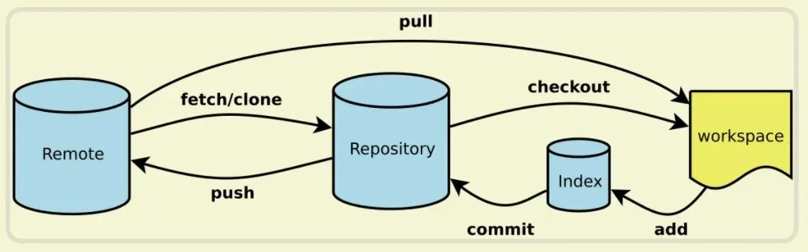
几个专用名词的译名如下：
- Workspace：工作区
- Index / Stage：暂存区
- Repository：仓库区（或本地仓库）
- Remote：远程仓库
工作流程
最基础的工作流程，首先执行 git pull 获取远程仓库的最新代码，进行代码的编写。
完成相应功能的开发后执行 git add . 将工作区代码的修改添加到暂存区，再执行 git commit -m 完成xx功能 将暂存区代码提交到本地仓库并添加相应的注释，最后执行 git push 命令推送到远程仓库。
撤回 git commit 操作
当执行了 git commit -m 注释内容 命令想要撤回，可以使用 git reset --soft HEAD^ 把本地仓库回退到当前版本的上一个版本，也就是刚刚还没提交的时候，代码的改动会保留在暂存区和工作区。
也可以使用 git reset --mixed HEAD^，这样不止回退了刚刚的 git commit 操作，还回退了 git add 操作，代码的改动只会保留在工作区。因为 --mixed 参数是 git reset 命令的默认选项，也就是可以写为 git reset HEAD^。
撤回 git push 操作
当执行了 git push 命令想要撤回，可以使用 git reset HEAD^ 将本地仓库回退到当前版本的上一个版本，代码的修改会保留在工作区，然后使用 git push origin xxx --force 将本地仓库当前版本的代码强制推送到远程仓库。
Redis有哪些客户端，有什么区别？
在 Java 编程中，我了解到的有 Jedis 和 Redisson 这两种客户端
-
Jedis：一款老牌的 Java Redis 客户端，提供了全面且简洁的 API，能直接对应 Redis 的各种命令，使用方式简单直观，适合对 Redis 命令操作有直接需求的场景，例如，执行
SET命令可以直接调用jedis.set(key, value)方法，但它没有提供分布式锁的实现，在分布式场景下功能有所欠缺 - Redisson：基于 Redis 实现的分布式和可扩展的 Java 数据结构集合，它不仅提供了与 Redis 交互的基本功能，还封装了丰富的分布式对象和服务，如分布式锁、分布式集合等，让开发者可以方便地在分布式系统中使用这些功能，而不需要自己去实现复杂的分布式逻辑。
我的项目中，因为有用到 redis 分布式锁，所以选择了 Redisson。
ElasticSearch如何进行全文检索的？
主要是利用了倒排索引的查询结构，倒排索引是一种用于快速搜索的数据结构，它将文档中的每个单词与包含该单词的文档进行关联。通常，倒排索引由单词（terms）和包含这些单词的文档（document）列表组成。
如何理解倒排索引呢？假如现有三份数据文档，文档的内容如下分别是：

通过分词器将每个文档的内容域拆分成单独的「词词汇」：
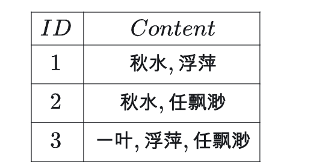
然后再构建从词汇到文档ID的映射，就形成了倒排索引。

当进行搜索时，系统只需查找倒排索引中包含搜索关键词的文档列表，比如用户输入"秋水"，通过倒排索引，可以快速的找到含有"秋水"的文档是id为 1,2 的文档，从而达到快速的全文检索的目的。
了解过 es 分词器有哪些？
常见的分词器如下：
-
standard 默认分词器，对单个字符进行切分，查全率高，准确度较低
-
IK 分词器 ik_max_word：查全率与准确度较高，性能也高，是业务中普遍采用的中文分词器
-
IK 分词器 ik_smart：切分力度较大，准确度与查全率不高，但是查询性能较高
-
Smart Chinese 分词器：查全率与准确率性能较高
-
hanlp 中文分词器：切分力度较大，准确度与查全率不高，但是查询性能较高
-
Pinyin 分词器：针对汉字拼音进行的分词器，与上面介绍的分词器稍有不同，在用拼音进行查询时查全率准确度较高
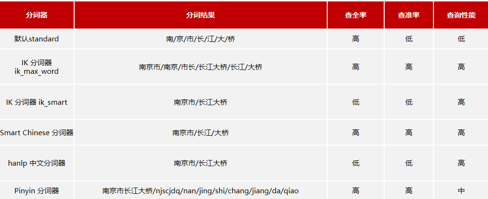
mafka和kafka有什么区别？
1、背景的区别
- mafka 是美团基于 kafka 再结合公司的业务自研的消息队列中间件。
- kafka是开源的消息队列中间件。
2、功能特性的区别：
- mafka 除了支持普通消息的多渠道并发生产和多业务并发消费外，还提供事务消息、优先级消息、延迟消息等多种消息特性，还具有流量隔离功能，能够在不同业务或用户之间进行流量控制和隔离，保障系统的稳定性，管理平台功能强大，不仅能实时查看队列的生产和消费情况，还支持自定义告警配置，方便对消息积压、消费速率等进行监控和告警。
- kafka 主要专注于高吞吐量的消息处理和流计算，在处理大规模的实时数据方面表现出色，支持消息的持久化存储，通过将消息存储在磁盘上，保证消息在处理过程中的可靠性和可恢复性，具有强大的分区和副本机制，能够实现数据的分布式存储和高可用性，确保在部分节点出现故障时，系统仍然能够正常运行。
3、架构设计的区别：
- mafka 架构由 Castle、Broker、Client SDK 等多个模块构成。Castle 负责配置管理和元数据存储，Broker 负责消息的存储和转发，Client SDK 提供给业务方进行消息的生产和消费，在消息生产和消费过程中，客户端与 Castle 建立心跳连接获取配置信息，然后根据不同的消息类型和业务需求，将消息发送到相应的 Broker 节点进行处理。
- kafka 主要由生产者（Producer）、消费者（Consumer）、主题（Topic）、分区（Partition）和代理（Broker）等组件构成，生产者将消息发送到指定的主题，主题被划分为多个分区，每个分区可以分布在不同的 Broker 上，消费者通过订阅主题来获取消息。
4、应用场景的区别：
- mafka 由于其丰富的功能特性和强大的管理平台，更适合于业务场景复杂、对消息队列功能要求多样化的企业内部应用。例如美团内部的各种业务场景，如订单处理、外卖配送、酒店预订等，需要支持多种消息类型和复杂的业务逻辑。
- kafka 因其高吞吐量、低延迟和强大的流处理能力，广泛应用于大数据处理、日志收集、实时监控、金融交易等领域。例如，在电商平台的实时数据监控、金融领域的交易流水处理等场景中，Kafka 能够快速处理大量的实时数据。
zookeeper拿来做什么？核心的原理是什么？
zookeeper是 分布式协调服务，它能很好地支持集群部署，并且具有很好的分布式协调能力，可以让我们在分布式部署的应用之间传递数据， 保证 顺序一致性（全序广播） 而不是 强一致性，以下是其常见的应用场景：
- 配置管理：在分布式系统中，不同节点往往需要相同的配置信息，如数据库连接参数、服务端口等。ZooKeeper 可以将这些配置信息集中存储，当配置发生变更时，能及时通知到各个节点。例如，一个由多个微服务组成的系统，各个服务实例可以从 ZooKeeper 中获取统一的配置，当配置更新时，ZooKeeper 会通知所有相关服务重新加载配置。
- 服务注册与发现：服务注册与发现是微服务架构中的关键环节。服务提供者在启动时将自己的服务信息（如服务名称、地址、端口等）注册到 ZooKeeper 中，服务消费者通过 ZooKeeper 查找并获取服务提供者的信息。当服务提供者发生变化（如上线、下线、故障等）时，ZooKeeper 会实时更新服务列表并通知服务消费者。像 Dubbo 框架就可以利用 ZooKeeper 实现服务的注册与发现。
- 分布式锁：在分布式环境下，多个进程或线程可能会竞争同一资源，为了避免数据不一致等问题，需要实现分布式锁。ZooKeeper 可以通过创建临时顺序节点来实现分布式锁。当一个客户端需要获取锁时，它会在 ZooKeeper 中创建一个临时顺序节点，然后检查自己创建的节点是否是序号最小的节点，如果是，则表示获取到了锁；如果不是，则等待前一个节点释放锁。
ZooKeeper 的数据模型类似于文件系统的树形结构，每个节点称为 Znode。
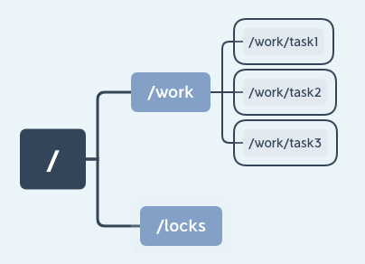
每个 Znode 可以存储数据，也可以有子节点。Znode 有不同的类型，包括持久节点（PERSISTENT）、临时节点（EPHEMERAL）和顺序节点（SEQUENTIAL）。
- 持久节点：一旦创建，除非主动删除，否则会一直存在。
- 临时节点：与客户端会话绑定，当客户端会话结束时，临时节点会自动被删除。
- 顺序节点：在创建时，ZooKeeper 会为其名称添加一个单调递增的序号，保证节点创建的顺序性。
ZooKeeper 使用 ZAB协议来保证集群中数据的一致性。ZAB 协议基于主从架构，有一个领导者（Leader）和多个跟随者（Follower）。
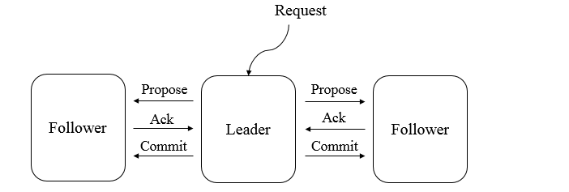
- 消息广播：当客户端发起写请求时，请求会先到达领导者。领导者将写操作封装成一个事务提案，并广播给所有跟随者。跟随者收到提案后，将其写入本地日志，并向领导者发送确认消息。当领导者收到超过半数跟随者的确认消息后，会发送提交消息给所有跟随者，跟随者收到提交消息后，将事务应用到本地状态机。
- 崩溃恢复：当领导者出现故障时，ZooKeeper 会进入崩溃恢复阶段。在这个阶段，集群会选举出新的领导者，并确保在新领导者产生之前，不会处理新的写请求。选举过程基于节点的事务 ID 和节点 ID 等信息，保证新选举出的领导者包含了所有已提交的事务。
7. git了解哪些命令？cherry-pick、rebase了解吗？
Git 命令我主要分为基础和高级两类。
基础命令比如clone拉取远程仓库，add和commit管理本地提交，push和pull同步远程分支，branch和checkout创建切换分支，merge合并分支。
高级命令里，我对cherry-pick和rebase比较熟悉。
-
cherry-pick就像是 “精准复制提交”，当你只需要某个分支的特定提交，而不是整个分支时，就可以用它。比如，开发分支上有个 bug 修复提交，但主分支不需要开发分支的其他代码，这时就可以在主分支上cherry-pick这个修复提交，Git 会在主分支上重新生成一个内容相同但哈希值不同的新提交。 -
rebase则是 “线性化提交历史” 的利器。比如你在 feature 分支开发了一段时间，主分支有了新提交，你可以在 feature 分支上执行rebase master，把 feature 的提交 “接到” 主分支最新提交之后，让提交历史看起来更整洁。但要注意，rebase 会修改提交哈希，所以不要对已推送的分支执行 rebase，否则会导致团队协作的冲突。这两个命令在处理复杂分支和提交时非常实用。
9. docker底层实现了解吗？怎么做的容器隔离？
Docker 的容器隔离主要基于 Linux 内核的命名空间（Namespaces）和控制组（cgroups）技术。
- 基于 Namespace 的视图隔离：Docker利用Linux命名空间（Namespace）来实现不同容器之间的隔离。每个容器都运行在自己的一组命名空间中，包括PID（进程）、网络、挂载点、IPC（进程间通信）等。这样，容器中的进程只能看到自己所在命名空间内的进程，而不会影响其他容器中的进程。
- 基于 cgroups 的资源隔离：cgroups 是Linux内核的一个功能，允许在进程组之间分配、限制和优先处理系统资源，如CPU、内存和磁盘I/O。它们提供了一种机制，用于管理和隔离进程集合的资源使用，有助于资源限制、工作负载隔离以及在不同进程组之间进行资源优先处理。
举个例子，当你启动一个容器时，Docker 会为它创建独立的 PID 命名空间，容器内的第一个进程 PID 为 1，与宿主机的 PID 完全隔离；同时，容器有自己的网络命名空间，可以分配独立的 IP 地址和端口。
这些命名空间和控制组都是 Linux 内核原生支持的，Docker 只是把它们组合起来，实现了高效的容器隔离。
6. kafka了解嘛？es？常见的开源组件？
我对 Kafka、ES 这些开源组件都有一定了解，平时工作中也常会接触到。
- Kafka 算是消息队列里的佼佼者，主要用来处理高吞吐的实时数据流，比如日志收集、事件驱动架构里的消息传递。它的核心是分区和副本机制，分区能让数据并行处理，副本则保证了数据不丢，所以能扛住每秒几十万的消息量，很多大厂用它做数据管道或者实时分析的基础。
- ES 也就是 Elasticsearch，是个分布式搜索引擎，基于 Lucene 做的，最擅长全文检索和日志分析。它把数据存在分片里，分片还能有副本，既能扩容量又能保证高可用。平时我们在系统里做模糊搜索、按条件过滤大量数据，用 ES 就很合适，比如电商的商品搜索、日志平台的查询，响应速度很快，还支持各种复杂的聚合分析。
除了这两个，常见的开源组件还有不少。比如 Redis，作为缓存和中间件，能做分布式锁、计数器，支持多种数据结构，性能特别好。数据库方面，MySQL 是关系型里的代表，PostgreSQL 功能更全，适合复杂业务；非关系型的像 MongoDB，存文档数据很方便，适合内容管理类场景。
你使用过Docker吗？
简单用过，Docker可以让开发者将应用程序和其依赖项打包到一个可移植的容器中，然后发布到任何流行的 Linux 机器上，也可以实现虚拟化。
以下是 Docker 的一些常见操作和功能：
-
镜像操作：可以使用
docker pull命令从镜像仓库中拉取已有的镜像，也可以通过docker build命令基于 Dockerfile 构建自己的镜像。例如，要拉取官方的 Nginx 镜像，可以在命令行中执行docker pull nginx。 -
容器管理：利用
docker run命令可以基于镜像创建并运行容器，还能使用docker stop、docker start、docker restart等命令对容器进行停止、启动、重启等操作。比如，docker run -d -p 80:80 nginx可以在后台运行一个 Nginx 容器，并将容器的 80 端口映射到主机的 80 端口。 -
网络配置：Docker 支持多种网络模式，如桥接网络、主机网络、overlay 网络等。可以通过
docker network create命令创建自定义网络，然后使用docker network connect将容器连接到指定网络。 -
数据管理：通过数据卷可以实现容器数据的持久化和共享。可以使用
docker volume create创建数据卷，然后在docker run命令中通过-v参数将数据卷挂载到容器内指定目录。
6. 你知道devops的开发流程吗？
DevOps 的开发流程核心是打破开发与运维的壁垒，通过工具链自动化实现从开发到部署的全流程协同。
流程始于开发阶段，开发者通过版本控制工具（如 Git）管理代码，结合 CI 工具（如 Jenkins）触发自动构建、单元测试和集成测试，确保代码质量。测试通过后，代码进入预发布环境，由自动化工具部署并执行验收测试、性能测试。
验证通过后，运维团队借助配置管理工具（如 Ansible）将应用部署到生产环境，同时监控系统（如 Prometheus）实时跟踪运行状态，收集日志与性能数据。
若出现问题，通过反馈机制快速定位并由开发团队修复，修复后的代码再次进入自动化流程，形成 “开发 - 测试 - 部署 - 监控 - 迭代” 的闭环，最终实现持续集成、持续部署和持续反馈，提升交付效率与系统稳定性。
docker底层依托于linux怎么实现资源隔离的？
- 基于 Namespace 的视图隔离：Docker利用Linux命名空间（Namespace）来实现不同容器之间的隔离。每个容器都运行在自己的一组命名空间中，包括PID（进程）、网络、挂载点、IPC（进程间通信）等。这样，容器中的进程只能看到自己所在命名空间内的进程，而不会影响其他容器中的进程。
- 基于 cgroups 的资源隔离：cgroups** **是Linux内核的一个功能，允许在进程组之间分配、限制和优先处理系统资源，如CPU、内存和磁盘I/O。它们提供了一种机制，用于管理和隔离进程集合的资源使用，有助于资源限制、工作负载隔离以及在不同进程组之间进行资源优先处理。
讲讲cgroup v2.0
cgroup v2 是 Linux cgroup API 的下一个版本。cgroup v2 提供了一个具有增强资源管理能力的统一控制系统。
cgroup v2 对 cgroup v1 进行了多项改进，例如：
- API 中单个统一的层次结构设计
- 更安全的子树委派给容器
- 更新的功能特性， 例如压力阻塞信息（Pressure Stall Information，PSI）
- 跨多个资源的增强资源分配管理和隔离
- 统一核算不同类型的内存分配（网络内存、内核内存等）
- 考虑非即时资源变化，例如页面缓存回写
v1 的 cgroup 为每个控制器都使用独立的树(目录)
[root@docker cgroup]# ls /sys/fs/cgroup/
blkio cpu cpuacct cpuacct,cpu cpu,cpuacct cpuset devices freezer hugetlb memory net_cls net_cls,net_prio net_prio perf_event pids rdma systemd
每个目录就代表了一个 cgroup subsystem，比如要限制 cpu 则需要到 cpu 目录下创建子目录(树)，限制 memory 则需要到 memory 目录下去创建子目录(树)。
比如 Docker 就会在 cpu、memory 等等目录下都创建一个名为 docker 的目录，在 docker 目录下在根据 containerID 创建子目录来实现资源限制。
各个 Subsystem 各自为政，看起来比混乱，难以管理
因此最终的结果就是：
- 用户空间最后管理着多个非常类似的 hierarchy，
- 在执行 hierarchy 管理操作时，每个 hierarchy 上都重复着相同的操作。
v2 中对 cgroups 的最大更改是将重点放在简化层次结构上
- v1 为每个控制器使用独立的树（例如 /sys/fs/cgroup/cpu/GROUPNAME和 /sys/fs/cgroup/memory/GROUPNAME）。
- v2 将统一/sys/fs/cgroup/GROUPNAME中的树，如果进程 X 加入/sys/fs/cgroup/test，则启用 test 的每个控制器都将控制进程 X。
如何使用 git 命令合并两个分支，发生冲突如何解决
- 查看冲突：当发生冲突时，Git 会提示您文件中的冲突部分。您可以使用以下命令查看所有冲突文件的状态。
git status
- 解决冲突：打开包含冲突的文件，您会看到类似以下的标记：
<<<<<<< HEAD
// 代码来自目标分支
=======
// 代码来自要合并的分支
>>>>>>> branchName
您需要手动编辑这些文件，决定保留哪些变更或者如何整合这些变更。
- 标记为已解决：完成冲突解决后，对已解决的文件使用以下命令标记为已解决。
git add <已解决文件>
- 完成合并：继续提交这些已解决的冲突文件。
git commit -m "解决合并冲突"
git rebase与git merge的区别是什么？
merge和rebasea都是合并历史记录的操作
-
merge：通过
merge合并分支会新增一个merge commit，然后将两个分支的历史联系起来，其实是一种非破坏性的操作，对现有分支不会以任何方式被更改，但是会导致历史记录相对复杂。 -
rebase：
rebase会将整个分支移动到另一个分支上，有效地整合了所有分支上的提交，要的好处是历史记录更加清晰，是在原有提交的基础上将差异内容反映进去，消除了git merge所需的不必要的合并提交。
举一个例子，比如初始状态下是：
A---B---C (main)
\
D---E (feature)
使用 git merge命令
git checkout main
git merge feature
结果：生成一个合并提交（F），保留分支结构。
A---B---C---F (main)
\ /
D---E (feature)
使用 git rebase
git checkout feature
git rebase main
git checkout main
git merge feature
结果：feature 的提交被“嫁接”到 main 的最新提交后，历史线性化。
A---B---C---D'---E' (main)
git rebase和merge的区别
- Rebase（变基）是将一个分支上的提交逐个地应用到另一个分支上，使得提交历史变得更加线性。当执行rebase时，Git会将目标分支与源分支的共同祖先以来的所有提交挪到目标分支的最新位置。这个过程可以看作是将源分支上的每个提交复制到目标分支上。简而言之，rebase可以将提交按照时间顺序线性排列。
- Merge（合并）是将两个分支上的代码提交历史合并为一个新的提交。在执行merge时，Git会创建一个新的合并提交，将两个分支的提交历史连接在一起。这样，两个分支的修改都会包含在一个合并提交中。合并后的历史会保留每个分支的提交记录。
讲一下Nginx的负载均衡策略
Nginx支持的负载均衡算法包括：
- 轮询：按照顺序依次将请求分配给后端服务器。这种算法最简单，但是也无法处理某个节点变慢或者客户端操作有连续性的情况。
- IP哈希：根据客户端IP地址的哈希值来确定分配请求的后端服务器。适用于需要保持同一客户端的请求始终发送到同一台后端服务器的场景，如会话保持。
- URL哈希：按访问的URL的哈希结果来分配请求，使每个URL定向到一台后端服务器，可以进一步提高后端缓存服务器的效率。
- 最短响应时间：按照后端服务器的响应时间来分配请求，响应时间短的优先分配。适用于后端服务器性能不均的场景，能够将请求发送到响应时间快的服务器，实现负载均衡。
- 加权轮询：按照权重分配请求给后端服务器，权重越高的服务器获得更多的请求。适用于后端服务器性能不同的场景，可以根据服务器权重分配请求，提高高性能服务器的利用率。
6. dockerfile写过没，大概是什么样子的？
Dockerfile 是用来构建 Docker 镜像的文本文件，包含一条条构建镜像所需的指令和说明。
以下是一个典型的 Dockerfile 示例，用于构建一个基于 Python 的 Web 应用镜像：
# 使用官方Python作为基础镜像
FROM python:3.9-slim
# 设置工作目录
WORKDIR /app
# 复制依赖文件并安装
COPY requirements.txt .
RUN pip install --no-cache-dir -r requirements.txt
# 复制应用代码
COPY . .
# 暴露应用端口
EXPOSE 5000
# 设置环境变量
ENV FLASK_APP=app.py
ENV FLASK_ENV=development
# 定义容器启动时执行的命令
CMD ["flask", "run", "--host=0.0.0.0"]
使用这个 Dockerfile 构建镜像的命令是：
docker build -t my-flask-app .
运行容器的命令是：
docker run -p 5000:5000 my-flask-app
通过 Dockerfile，可以将应用及其依赖打包成一个独立的容器镜像，确保应用在不同环境中一致运行。
7. 到指定commit用什么git命令？
要将当前分支重置到指定的 commit，可以使用 git reset 命令。根据不同的需求，有三种常用模式：
- 软重置（保留工作目录和暂存区）
git reset --soft <commit-hash>
- 移动分支指针到目标 commit，但保留所有修改在 暂存区（需重新提交）。
- 适用场景修改提交历史，合并多个 commit。
- 混合重置（默认，保留工作目录）
git reset --mixed <commit-hash>
-
移动分支指针到目标 commit，并将所有修改保留在 工作目录（需重新
git add）。 - 适合撤销提交但保留修改重新整理的场景
- 硬重置（彻底丢弃修改）
git reset --hard <commit-hash>
- 移动分支指针到目标 commit，丢弃所有后续修改（工作目录和暂存区均被重置）。
- 此操作不可逆！未提交/未备份的修改将永久丢失。
假设目标 commit 的哈希值为 a1b2c3d：
# 软重置（修改进入暂存区）
git reset --soft a1b2c3d
# 混合重置（修改进入工作目录）
git reset --mixed a1b2c3d
# 硬重置（彻底丢弃修改）
git reset --hard a1b2c3d
12. 说一下你对 grpc的理解 ？
gRPC 是由 Google 开发的高性能、开源的通用 RPC（远程过程调用）框架，核心目标是简化分布式系统中服务之间的通信。
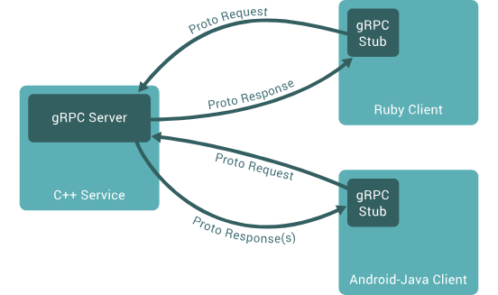
grpc核心特性是：
- 基于 HTTP/2 协议：相比传统 HTTP/1.1，HTTP/2 支持多路复用（一个连接并发处理多个请求）、头部压缩、服务器推送等特性，显著提升性能和效率。
-
Protobuf：默认使用 Protobuf 作为接口定义语言（IDL）和序列化协议，通过
**.proto**文件定义服务和消息格式，生成的代码高效且跨语言兼容。 -
强类型接口：服务接口在
**.proto**文件中明确定义，生成客户端和服务端代码，避免手动解析数据，减少错误。 - 跨语言支持：支持多种编程语言（如 Go、Java、Python、C++、Node.js 等），适合多语言微服务架构。
protobuf了解吗
答：不了解
补充：
Protobuf 是用于数据序列化和反序列化的格式，类似于 json。但它们有以下几点区别：
- 数据大小：Protobuf是一种二进制格式，相对于JSON来说，数据大小更小，序列化和反序列化的效率更高，因此在网络传输和存储方面具有一定的优势。
- 性能：由于Protobuf是二进制格式，相对于JSON来说，解析速度更快，占用的CPU和内存资源更少，因此在高并发场景下，性能更优。
- 可读性：JSON是一种文本格式，可读性更好，易于调试和排查问题。而Protobuf是一种二进制格式，可读性较差。
Protobuf适用于高性能、大数据量、高并发等场景，而JSON适用于数据交换、易读性要求高的场景。
Docker为什么能环境隔离
- 基于 Namespace 的视图隔离：Docker利用Linux命名空间（Namespace）来实现不同容器之间的隔离。每个容器都运行在自己的一组命名空间中，包括PID（进程）、网络、挂载点、IPC（进程间通信）等。这样，容器中的进程只能看到自己所在命名空间内的进程，而不会影响其他容器中的进程。
- 基于 cgroups 的资源隔离：cgroups 是Linux内核的一个功能，允许在进程组之间分配、限制和优先处理系统资源，如CPU、内存和磁盘I/O。它们提供了一种机制，用于管理和隔离进程集合的资源使用，有助于资源限制、工作负载隔离以及在不同进程组之间进行资源优先处理。
ElasticSearch如何进行全文检索的？
主要是利用了倒排索引的查询结构，倒排索引是一种用于快速搜索的数据结构，它将文档中的每个单词与包含该单词的文档进行关联。通常，倒排索引由单词（terms）和包含这些单词的文档（document）列表组成。
如何理解倒排索引呢？假如现有三份数据文档，文档的内容如下分别是：
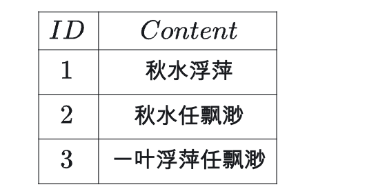
通过分词器将每个文档的内容域拆分成单独的「词词汇」：

然后再构建从词汇到文档ID的映射，就形成了倒排索引。
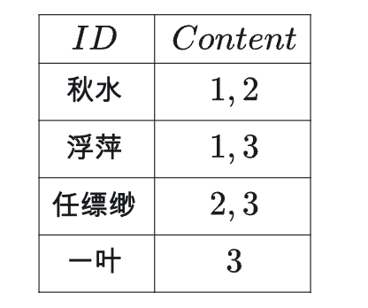
当进行搜索时，系统只需查找倒排索引中包含搜索关键词的文档列表，比如用户输入"秋水"，通过倒排索引，可以快速的找到含有"秋水"的文档是id为 1,2 的文档，从而达到快速的全文检索的目的。
了解过 es 分词器有哪些？
常见的分词器如下：
-
standard 默认分词器，对单个字符进行切分，查全率高，准确度较低
-
IK 分词器 ik_max_word：查全率与准确度较高，性能也高，是业务中普遍采用的中文分词器
-
IK 分词器 ik_smart：切分力度较大，准确度与查全率不高，但是查询性能较高
-
Smart Chinese 分词器：查全率与准确率性能较高
-
hanlp 中文分词器：切分力度较大，准确度与查全率不高，但是查询性能较高
-
Pinyin 分词器：针对汉字拼音进行的分词器，与上面介绍的分词器稍有不同，在用拼音进行查询时查全率准确度较高

Kafka如何保证消息不丢失？
使用一个消息队列，其实就分为三大块：生产者、中间件、消费者，所以要保证消息就是保证三个环节都不能丢失数据。

- 消息生产阶段：生产者会不会丢消息，取决于生产者对于异常情况的处理是否合理。从消息被生产出来，然后提交给 MQ 的过程中，只要能正常收到 （ MQ 中间件） 的 ack 确认响应，就表示发送成功，所以只要处理好返回值和异常，如果返回异常则进行消息重发，那么这个阶段是不会出现消息丢失的。
- 消息存储阶段：Kafka 在使用时是部署一个集群，生产者在发布消息时，队列中间件通常会写「多个节点」，也就是有多个副本，这样一来，即便其中一个节点挂了，也能保证集群的数据不丢失。
- 消息消费阶段：消费者接收消息+消息处理之后，才回复 ack 的话，那么消息阶段的消息不会丢失。不能收到消息就回 ack，否则可能消息处理中途挂掉了，消息就丢失了。
Kafka如何保证消息不重复消费？
导致重复消费的原因可能出现在生产者，也可能出现在 MQ 或 消费者。
这里说的重复消费问题是指同一个数据被执行了两次，不单单指 MQ 中一条消息被消费了两次，也可能是 MQ 中存在两条一模一样的消费。
- 生产者：生产者可能会重复推送一条数据到 MQ 中，为什么会出现这种情况呢？也许是一个 Controller 接口被重复调用了 2 次，没有做接口幂等性导致的；也可能是推送消息到 MQ 时响应比较慢，生产者的重试机制导致再次推送了一次消息。
- MQ：在消费者消费完一条数据响应 ack 信号消费成功时，MQ 突然挂了，导致 MQ 以为消费者还未消费该条数据，MQ 恢复后再次推送了该条消息，导致了重复消费。
- 消费者：消费者已经消费完了一条消息，正准备但是还未给 MQ 发送 ack 信号时，此时消费者挂了，服务重启后 MQ 以为消费者还没有消费该消息，再次推送了该条消息。
消费者怎么解决重复消费问题呢？这里提供两种方法：
- 状态判断法：消费者消费数据后把消费数据记录在 redis 中，下次消费时先到 redis 中查看是否存在该消息，存在则表示消息已经消费过，直接丢弃消息。
- 业务判断法：通常数据消费后都需要插入到数据库中，使用数据库的唯一性约束防止重复消费。每次消费直接尝试插入数据，如果提示唯一性字段重复，则直接丢失消息。一般都是通过这个业务判断的方法就可以简单高效地避免消息的重复处理了。
3. kafka有一个partation，消息堆积了怎么办？
首先先分析问题背景，当 Kafka 的某个分区（Partition）出现消息堆积时，意味着消费者处理消息的速度跟不上生产者生产消息的速度，解决方式：
- 提升消费者处理能力：对消费者代码进行优化，去除不必要的计算和阻塞操作，提高消息处理的效率。例如，避免在消息处理过程中进行大量的磁盘 I/O 操作，也可以给消费者程序分配更多的 CPU、内存等资源，以提升其处理能力。
- 增加消费者数量：在消费者组中添加更多的消费者实例，让它们共同分担消息处理任务。但要注意，消费者数量不能超过分区数，否则部分消费者将无法分配到分区。
- 控制生产者生产速度：在生产者端实现限流机制，控制消息的发送速度，避免生产者生产消息过快。例如，使用令牌桶算法或漏桶算法进行限流。
4. kafka消费端如何做幂等？
幂等性即使同一条消息被消费多次，最终结果应与消费一次相同，要实现幂等性主要有这些关键点：
- 消息去重：识别重复消息并丢弃。
- 状态管理：记录已处理的消息，防止重复处理。
- 事务性操作：确保消费与业务操作原子性。
消费端实现幂等的实现方案：
- 方案一：利用数据库唯一键约束。利用业务自身的唯一标识，如订单号、交易 ID 等作为主键。在处理消息时，先检查该主键是否已经处理过，如果已经处理过则跳过该消息，否则进行处理并记录该主键，适用场景消费逻辑涉及数据库写入，且消息本身有唯一标识。
-
方案三：使用 Redis 记录已处理消息。实现方式用 Redis 的
SETNX（或SET key value EX 3600 NX）记录已处理消息的 ID，如果消费失败，需删除 Redis 键或引入重试机制。适合场景高频消费，需要快速去重，允许短暂数据不一致。
kafka怎么做的吞吐量那么大
- 顺序写入优化：Kafka将消息顺序写入磁盘，减少了磁盘的寻道时间。这种方式比随机写入更高效，因为磁盘读写头在顺序写入时只需移动一次。
- 批量处理技术：Kafka支持批量发送消息，这意味着生产者在发送消息时可以等待直到有足够的数据积累到一定量，然后再发送。这种方法减少了网络开销和磁盘I/O操作的次数，从而提高了吞吐量。
- 零拷贝技术：Kafka使用零拷贝技术，可以直接将数据从磁盘发送到网络套接字，避免了在用户空间和内核空间之间的多次数据拷贝。这大幅降低了CPU和内存的负载，提高了数据传输效率。
- 压缩技术：Kafka支持对消息进行压缩，这不仅减少了网络传输的数据量，还提高了整体的吞吐量。
docker底层是怎么实现的？？
- 基于 Namespace 的视图隔离：Docker利用Linux命名空间（Namespace）来实现不同容器之间的隔离。每个容器都运行在自己的一组命名空间中，包括PID（进程）、网络、挂载点、IPC（进程间通信）等。这样，容器中的进程只能看到自己所在命名空间内的进程，而不会影响其他容器中的进程。
- 基于 cgroups 的资源隔离：cgroups 是Linux内核的一个功能，允许在进程组之间分配、限制和优先处理系统资源，如CPU、内存和磁盘I/O。它们提供了一种机制，用于管理和隔离进程集合的资源使用，有助于资源限制、工作负载隔离以及在不同进程组之间进行资源优先处理。
grpc底层的通信协议是什么？
gRPC底层的通信协议是HTTP/2。
HTTP/2 相比 HTTP/1.1 性能上的改进：
- 头部压缩
- 二进制格式
- 并发传输
- 服务器主动推送资源
1. 头部压缩
HTTP/2 会压缩头（Header）如果你同时发出多个请求，他们的头是一样的或是相似的，那么，协议会帮你消除重复的部分。
这就是所谓的 HPACK 算法：在客户端和服务器同时维护一张头信息表，所有字段都会存入这个表，生成一个索引号，以后就不发送同样字段了，只发送索引号，这样就提高速度了。
2. 二进制格式
HTTP/2 不再像 HTTP/1.1 里的纯文本形式的报文，而是全面采用了二进制格式，头信息和数据体都是二进制，并且统称为帧（frame）：头信息帧（Headers Frame）和数据帧（Data Frame）。

这样虽然对人不友好，但是对计算机非常友好，因为计算机只懂二进制，那么收到报文后，无需再将明文的报文转成二进制，而是直接解析二进制报文，这增加了数据传输的效率。
3. 并发传输
我们都知道 HTTP/1.1 的实现是基于请求-响应模型的。同一个连接中，HTTP 完成一个事务（请求与响应），才能处理下一个事务，也就是说在发出请求等待响应的过程中，是没办法做其他事情的，如果响应迟迟不来，那么后续的请求是无法发送的，也造成了队头阻塞的问题。
而 HTTP/2 就很牛逼了，引出了 Stream 概念，多个 Stream 复用在一条 TCP 连接。
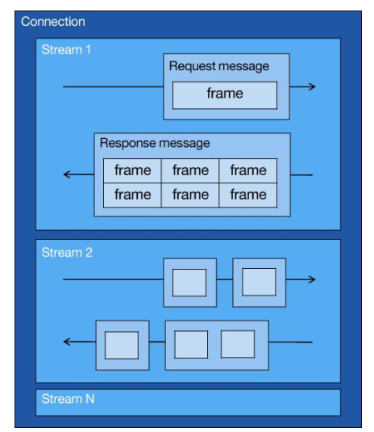
从上图可以看到，1 个 TCP 连接包含多个 Stream，Stream 里可以包含 1 个或多个 Message，Message 对应 HTTP/1 中的请求或响应，由 HTTP 头部和包体构成。Message 里包含一条或者多个 Frame，Frame 是 HTTP/2 最小单位，以二进制压缩格式存放 HTTP/1 中的内容（头部和包体）。
针对不同的 HTTP 请求用独一无二的 Stream ID 来区分，接收端可以通过 Stream ID 有序组装成 HTTP 消息，不同 Stream 的帧是可以乱序发送的，因此可以并发不同的 Stream ，也就是 HTTP/2 可以并行交错地发送请求和响应。
比如下图，服务端并行交错地发送了两个响应：Stream 1 和 Stream 3，这两个 Stream 都是跑在一个 TCP 连接上，客户端收到后，会根据相同的 Stream ID 有序组装成 HTTP 消息。

4、服务器推送
HTTP/2 还在一定程度上改善了传统的「请求 - 应答」工作模式，服务端不再是被动地响应，可以主动向客户端发送消息。
客户端和服务器双方都可以建立 Stream， Stream ID 也是有区别的，客户端建立的 Stream 必须是奇数号，而服务器建立的 Stream 必须是偶数号。
比如下图，Stream 1 是客户端向服务端请求的资源，属于客户端建立的 Stream，所以该 Stream 的 ID 是奇数（数字 1）；Stream 2 和 4 都是服务端主动向客户端推送的资源，属于服务端建立的 Stream，所以这两个 Stream 的 ID 是偶数（数字 2 和 4）。
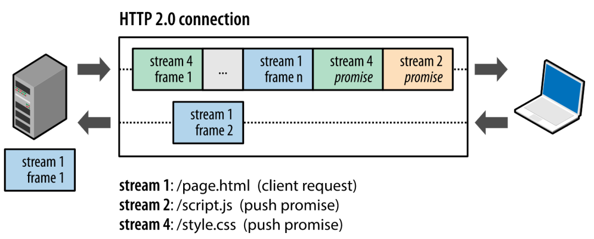
再比如，客户端通过 HTTP/1.1 请求从服务器那获取到了 HTML 文件，而 HTML 可能还需要依赖 CSS 来渲染页面，这时客户端还要再发起获取 CSS 文件的请求，需要两次消息往返，如下图左边部分：

如上图右边部分，在 HTTP/2 中，客户端在访问 HTML 时，服务器可以直接主动推送 CSS 文件，减少了消息传递的次数。
grpc相比于http优势在哪？
性能优势
gRPC 消息使用 Protobuf进行序列化。Protobuf 在服务器和客户端上可以非常快速地序列化。Protobuf 序列化产生的有效负载较小，这在移动应用等带宽有限的方案中很重要。
gRPC 专为 HTTP/2（HTTP 的主要版本）而设计，与 HTTP 1.x 相比，HTTP/2 具有巨大性能优势：
- 二进制组帧和压缩。HTTP/2 协议在发送和接收方面均紧凑且高效。
- 在单个 TCP 连接上多路复用多个 HTTP/2 调用。多路复用可消除队头阻塞。
代码生成
所有 gRPC 框架都为代码生成提供一流支持。.proto 文件是 gRPC 开发的核心文件，它定义 gRPC 服务和消息的协定。通过此文件，gRPC 框架生成服务基类、消息和完整的客户端。
通过在服务器和客户端之间共享 .proto 文件，可以端到端生成消息和客户端代码。客户端的代码生成消除了客户端和服务器上的消息重复，并为你创建强类型客户端。无需编写客户端可在具有许多服务的应用程序中节省大量开发时间。
严格规范
具有 JSON 的 HTTP API 没有正式规范。开发人员为 URL、HTTP 谓词和响应代码的最佳格式争论不休。
gRPC 规范对 gRPC 服务必须遵循的格式进行了规定。gRPC 消除了争论并为开发人员节省了时间，因为 gRPC 在各个平台和实现中都是一致的。
平时一般用docker做什么？
Docker使用前后对比
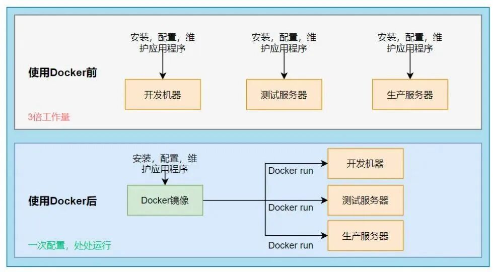
-
在没有使用Docker时，我们开发完毕一个项目，需要打成war包或jar包。然后，在服务器上进行各种环境的安装、配置以及应用程序维护，比如：JDK、Tomcat、数据库等。而且，上述的配置在开发环境、测试服务器、生产服务器（通常会有很多个），都需要进行一遍同样的操作，工作量相当繁重。
-
在使用了Docker之后，我们可以自己创建一个空的镜像从头构建，也可以使用公共仓库中已经构建好的镜像，直接使用。当需要在不同环境中进行部署时，直接使用构建好的镜像即可，一次构建，多环境多次使用，方便快捷。
7. docker是如何实现隔离性的？
- 基于 Namespace 的视图隔离：Docker利用Linux命名空间（Namespace）来实现不同容器之间的隔离。每个容器都运行在自己的一组命名空间中，包括PID（进程）、网络、挂载点、IPC（进程间通信）等。这样，容器中的进程只能看到自己所在命名空间内的进程，而不会影响其他容器中的进程。
- 基于 cgroups 的资源隔离：cgroups 是Linux内核的一个功能，允许在进程组之间分配、限制和优先处理系统资源，如CPU、内存和磁盘I/O。它们提供了一种机制，用于管理和隔离进程集合的资源使用，有助于资源限制、工作负载隔离以及在不同进程组之间进行资源优先处理。
8. docker的brige和host的区别？
bridge和host是两种常用的网络模式，它们的主要区别如下：
-
在Bridge模式下，Docker会为每个容器创建一个虚拟网络接口，并分配一个独立的IP地址。容器之间可以通过桥接网络进行通信，也可以通过宿主机进行网络访问。
bridge模式的优点是容器之间互相隔离、每个容器都有自己独立的IP地址、安全性较好。此外，bridge模式允许我们通过网络连接容器、方便容器之间的通信。缺点是相对于Host模式，bridge模式的网络性能要稍差一些，因为容器之间的网络通信需要经过额外的网络转发和封装。 - 在Host模式下、容器与宿主机共享网络命名空间，容器直接使用宿主机的网络资源。这意味着容器可以绑定宿主机的IP地址和端口，使得容器中运行的应用程序可以直接访问宿主机网络上的服务。Host模式的优点是网络性能较好，因为容器直接使用宿主机的网络资源，避免了额外的网络转发和封装。但是，Host模式下容器与宿主机共享网络命名空间，容器的网络隔离性较差，容器中的应用程序可能会直接访问到宿主机上的服务，增加了安全风险。
讲一个中间件吧，讲讲他的作用？
我还熟悉消息队列，消息队列的三大作用是：
- 解耦：可以在多个系统之间进行解耦，将原本通过网络之间的调用的方式改为使用MQ进行消息的异步通讯，只要该操作不是需要同步的，就可以改为使用MQ进行不同系统之间的联系，这样项目之间不会存在耦合，系统之间不会产生太大的影响，就算一个系统挂了，也只是消息挤压在MQ里面没人进行消费而已，不会对其他的系统产生影响。
- 异步：加入一个操作设计到好几个步骤，这些步骤之间不需要同步完成，比如客户去创建了一个订单，还要去客户轨迹系统添加一条轨迹、去库存系统更新库存、去客户系统修改客户的状态等等。这样如果这个系统都直接进行调用，那么将会产生大量的时间，这样对于客户是无法接收的；并且像添加客户轨迹这种操作是不需要去同步操作的，如果使用MQ将客户创建订单时，将后面的轨迹、库存、状态等信息的更新全都放到MQ里面然后去异步操作，这样就可加快系统的访问速度，提供更好的客户体验。
- 削峰：一个系统访问流量有高峰时期，也有低峰时期，比如说，中午整点有一个抢购活动等等。比如系统平时流量并不高，一秒钟只有100多个并发请求，系统处理没有任何压力，一切风平浪静，到了某个抢购活动时间，系统并发访问了剧增，比如达到了每秒5000个并发请求，而我们的系统每秒只能处理2000个请求，那么由于流量太大，我们的系统、数据库可能就会崩溃。这时如果使用MQ进行流量削峰，将用户的大量消息直接放到MQ里面，然后我们的系统去按自己的最大消费能力去消费这些消息，就可以保证系统的稳定，只是可能要跟进业务逻辑，给用户返回特定页面或者稍后通过其他方式通知其结果。
K8s和docker 平时用什么操作？
docker常见操作：
-
拉取镜像：
docker pull nginx:latest -
构建镜像：
docker build -t my-image:1.0 . -
删除镜像：
docker rmi my-image:1.0 -
运行容器：
docker run -d -p 80:80 nginx:latest -
查看运行中的容器：
docker ps -
进入容器终端：
docker exec -it my-container /bin/bash
k8s常见的操作：
- 创建 Pod：根据 YAML 文件创建一个 Pod：
kubectl apply -f pod - example.yaml
- 查看资源状态：
kubectl get pods # 查看 Pod
kubectl get deployments # 查看 Deployment
kubectl get services # 查看 Service
kubectl get nodes # 查看集群节点
- 删除资源：
kubectl delete pod my-pod
- 进入 Pod 终端：
kubectl exec -it my-pod -- /bin/bash
- 手动扩缩容：
kubectl scale deployment my-deployment --replicas=3
docker和k8s常见操作表格整理的如下：
| 场景 | Docker 命令 | Kubernetes 命令 |
|---|---|---|
| 运行容器/Pod | docker run |
kubectl create -f pod.yaml |
| 查看运行状态 | docker ps |
kubectl get pods |
| 查看日志 | docker logs |
kubectl logs |
| 进入容器/Pod 终端 | docker exec -it |
kubectl exec -it |
| 停止资源 | docker stop |
kubectl delete |
| 扩缩容 | 无（单容器） | kubectl scale |
git常用的命令？
git 的工作原理如下图：
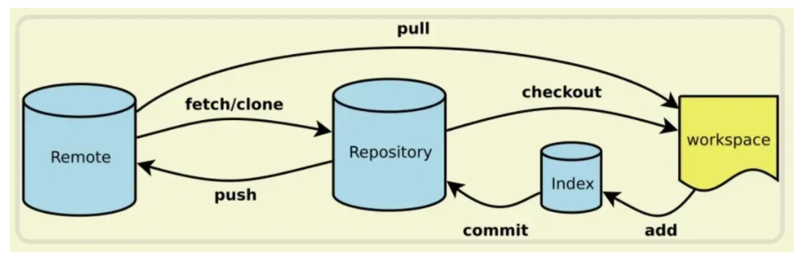
几个专用名词的译名如下：
- Workspace：工作区
- Index / Stage：暂存区
- Repository：仓库区（或本地仓库）
- Remote：远程仓库
工作流程
最基础的工作流程，首先执行 git pull 获取远程仓库的最新代码，进行代码的编写。
完成相应功能的开发后执行 git add . 将工作区代码的修改添加到暂存区，再执行 git commit -m 完成xx功能 将暂存区代码提交到本地仓库并添加相应的注释，最后执行 git push 命令推送到远程仓库。
撤回 git commit 操作
当执行了 git commit -m 注释内容 命令想要撤回，可以使用 git reset --soft HEAD^ 把本地仓库回退到当前版本的上一个版本，也就是刚刚还没提交的时候，代码的改动会保留在暂存区和工作区。
也可以使用 git reset --mixed HEAD^，这样不止回退了刚刚的 git commit 操作，还回退了 git add 操作，代码的改动只会保留在工作区。因为 --mixed 参数是 git reset 命令的默认选项，也就是可以写为 git reset HEAD^。
撤回 git push 操作
当执行了 git push 命令想要撤回，可以使用 git reset HEAD^ 将本地仓库回退到当前版本的上一个版本，代码的修改会保留在工作区，然后使用 git push origin xxx --force 将本地仓库当前版本的代码强制推送到远程仓库。